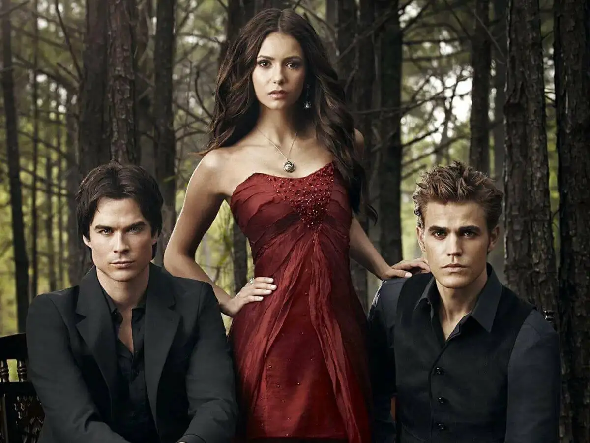
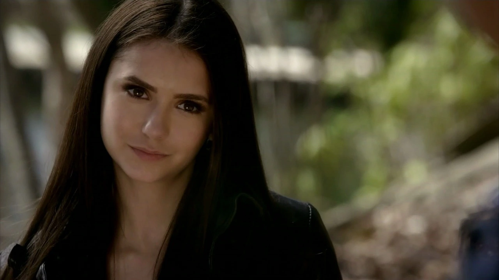
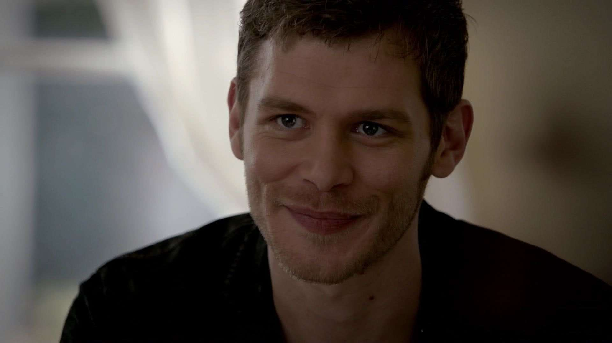
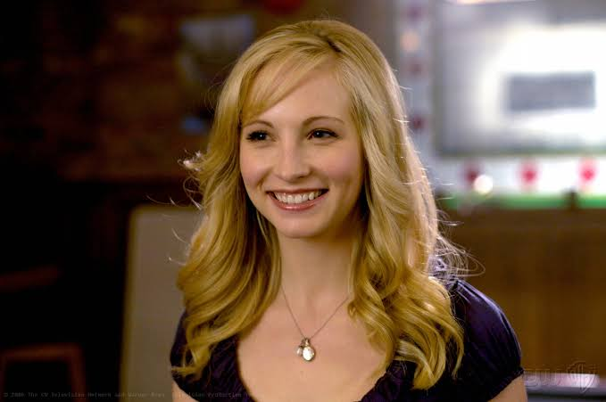
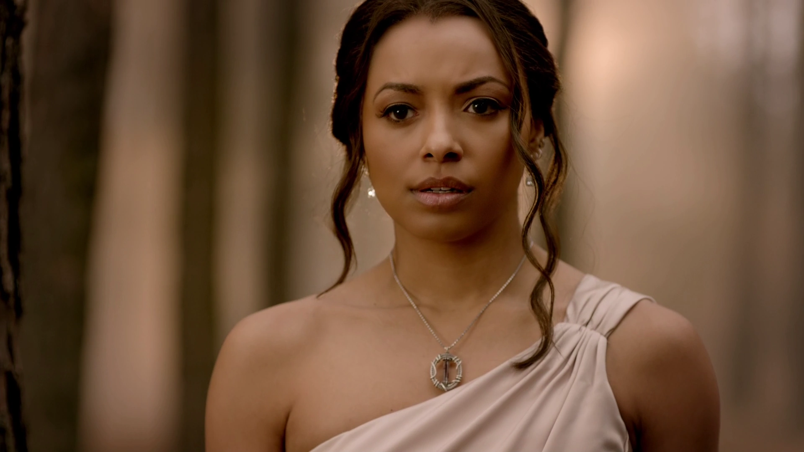
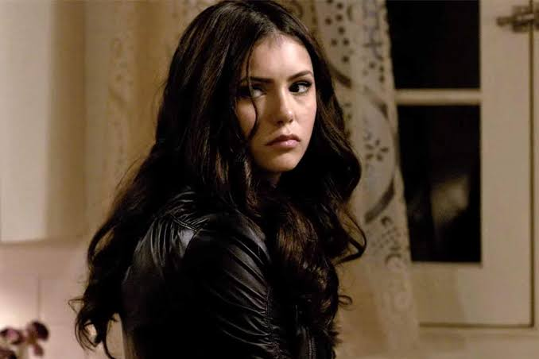
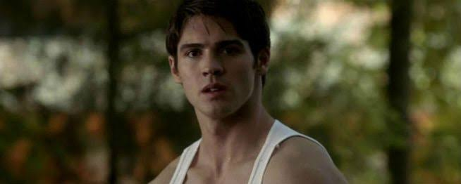

Conheça os maiores imortais de Mystic Falls!
Da sabedoria secular de Katherine Pierce e Klaus Mikaelson ao triângulo amoroso histórico entre a compaixão de Stefan Salvatore, o charme sombrio de Damon e a humanidade de Elena Gilbert, conheça os seres que moldaram o mundo sobrenatural.

Vampiros em destaque
Damon Salvatore
Vampiro sarcástico, impulsivo e charmosoStefan Salvatore
O irmão mais novo, que busca pela humanidade.
Elena Gilbert
O centro emocional da história, A protagonista.
Klaus Mikaelson
O temido vampiro original híbrido
Caroline Forbes
Uma jovem insegura, que se transforma em uma vampira extremamente forte.
Bonnie Bennett
Uma bruxa poderosa e altruísta que está sempre disposta a ajudar os amigos
Katherine Pierce
Uma sedutora e manipuladora duplicata disposta a tudo para sobreviver.